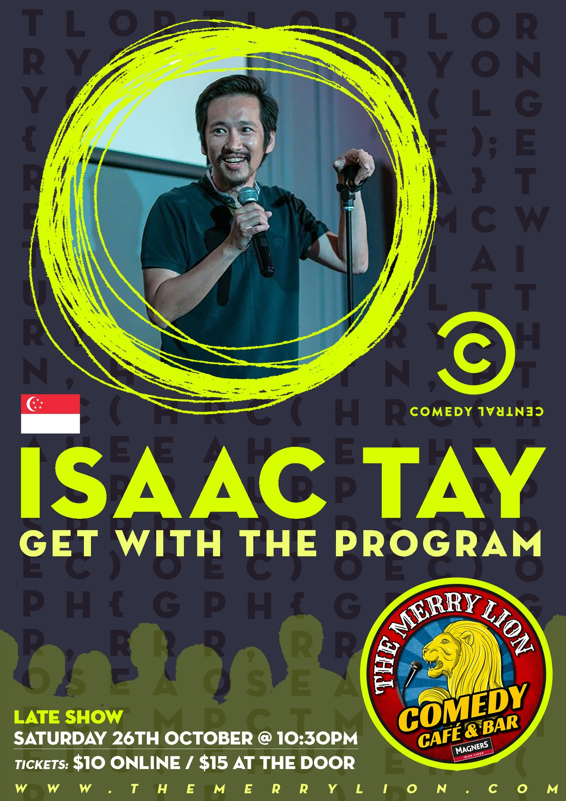

First hour-long show. Pretty excited about this milestone. First time on stage was in June 2013 at Comedy Masala. I took a break performing regularly in 2015 after honestbee was started. Kickstarted the standup comedy journey again after leaving the company. It has been an emotional rollercoaster these twelve months and part of that experience will be seeping into the set.
26th Ocotber 2019 @ The Merry Lion
Startups by Day, Standup by Night. Suaku, Kiasu, Kaisee - in 2019, Isaac travelled from Singapore to London by land on buses and trains. Isaac claims it’s only a mid-life crisis if he lives to 76.
Presenting his never-before-seen hour-long comedy special, Get with the Program is about growing up in Singapore and all the misadventures in learning how to live.
